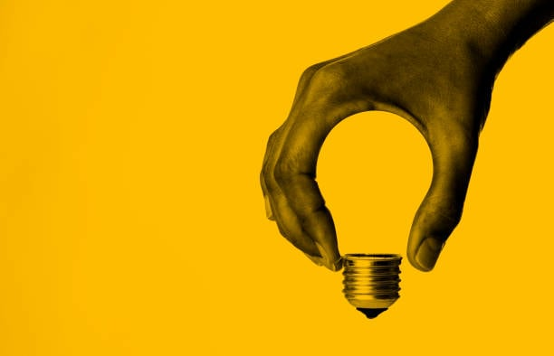
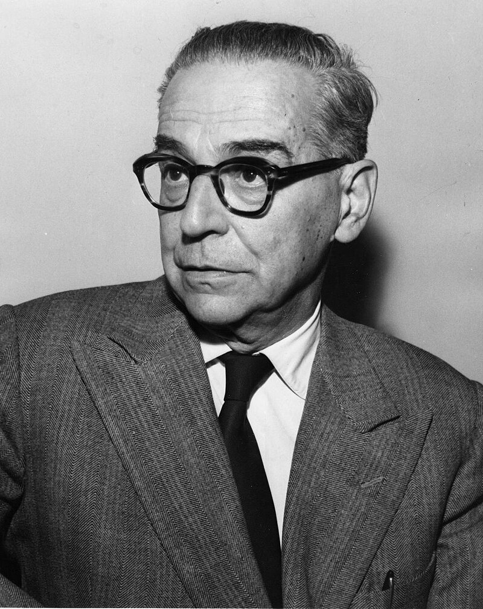
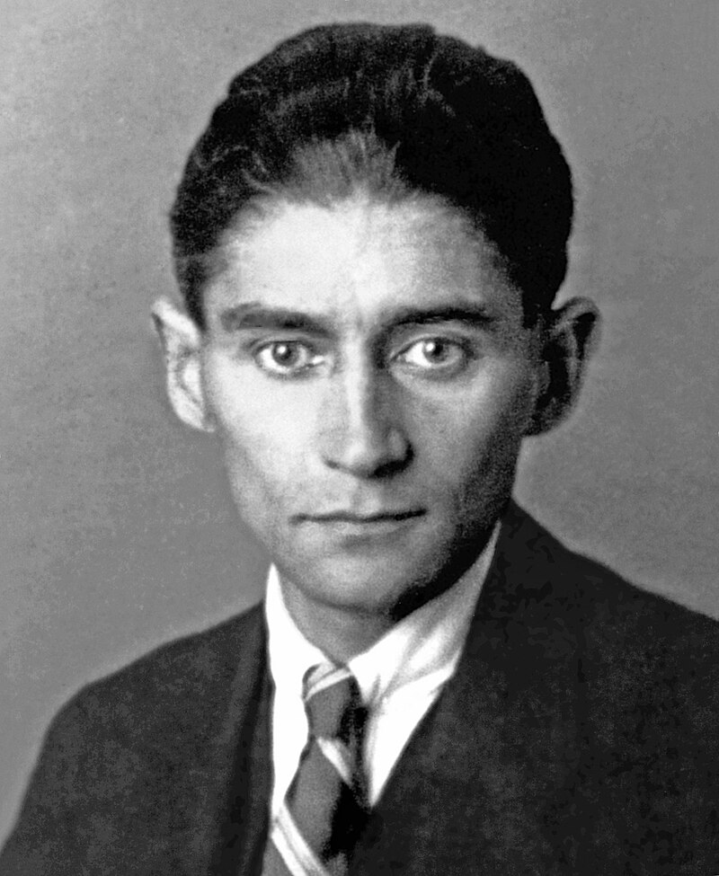
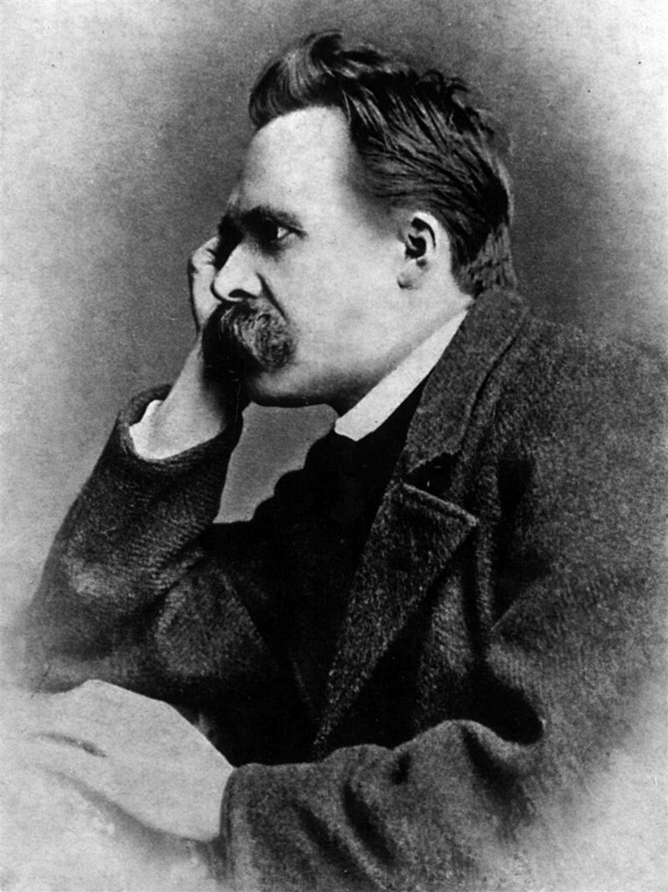

Pišete knjigu, crtate ili komponujete muziku? Za bilo koji kreativan proces, kao što je na primer odabir teme za domaći iz EPOS-a, potrebna nam je inspiracija. Međutim, inspiracije nekad jednostavno nema i jako je teško da je stvorimo. U tome Vam može pomoći ovaj sajt. Generisanjem nasumičnog citata neke poznate i kreativne osobe možda možemo da Vam pomognemo da nađete inspiraciju koja Vam je potrebna.
Nadahnuće ili inspiracija je, u psihologiji, faza u toku stvaralačkog mišljenja, u kojoj se do rešenja dolazi iznenada. Tada se neočekivano ukazuje celo rešenje do tada nerešivog problema. Naziva se još i uviđanje ili iluminacija.
Kao emocionalni koncept, ovo je stanje tipično obilježje i sastavni element kreativne aktivnosti. Često se doživljava kao fenomen koji postoji odvojeno od svog nositelja, koji mu dolazi izvana. Kao dar viših sila, njegova jedinstvenost objašnjava rijetkost i kratkotrajnost nadahnuća koja nije dostupna običnom smrtniku, osim nekolicine odabranih.
Osnova nastanka ovog stanja je dominantni fokus uzbuđenja u moždanoj kori, koji potiskuje druge aktivne centre. Žarišta uzbuđenja posljedica su kao reakcija na vanjske podražaje. Najčešće postoji nekoliko takvih žarišta, jer osoba opaža mnogo različitih predmeta.
Prijavite se za naš newsletter i redovno dobijajte inspiracioni mail!
Godine 1961. dobio je Nobelovu nagradu za književnost „za epsku snagu kojom je oblikovao teme i prikazao sudbine ljudi tokom istorije svoje zemlje”. Kao gimnazijalac, Andrić je bio pripadnik naprednog revolucionarnog pokreta protiv Austrougarske vlasti Mlada Bosna i strastveni borac za oslobođenje južnoslovenskih naroda od Austrougarske monarhije. U austrijskom Gracu je diplomirao i doktorirao, a vreme između dva svetska rata proveo je u službi u konzulatima i poslanstvima Kraljevine Jugoslavije u Rimu, Bukureštu, Gracu, Parizu, Madridu, Briselu, Ženevi i Berlinu. Bio je član Srpske akademije nauka i umetnosti u koju je primljen 1926. godine. Njegova najpoznatija dela su pored romana Na Drini ćuprija i Travnička hronika, Prokleta avlija, Gospođica i Jelena, žena koje nema. U svojim delima se uglavnom bavio opisivanjem života u Bosni za vreme osmanske vlasti.
Franc Kafka je nemački pisac jevrejsko-češkoga porekla kojeg kritika danas smatra jednim od najvećih autora XX veka. Kafka je govorio i svoja dela pisao na nemačkom jeziku. Dobro je znao i češki jezik. Stilom pisanja, Kafka je pripadao avangardi, pravcu iz srednje faze modernizma, ali je svojim delovanjem uveliko uticao na brojne stilove kasnog modernizma, uključujući i egzistencijalizam. Njegova najznačajnija dela, pripovetka Preobražaj, te romani Proces i Dvorac prepuni su tematike koja predstavlja arhetipove otuđenosti, psihofizičke brutalnosti, sukoba na relaciji roditelji-deca, likova na zastrašujućim putovanjima i mističnih transformacija.
Fridrih Vilhelm Niče bio je nemački filozof, jedan od najvećih modernih mislilaca i jedan od najoštrijih kritičara zapadne civilizacije, kulture i hrišćanstva; filolog, esejista, filozof, pesnik i kompozitor. Studirao je klasičnu filologiju i kratko vreme radio kao profesor u Bazelu, ali je morao da se povuče zbog bolesti. Na Ničea su najviše uticali Šopenhauer, kompozitor Vagner i predsokratovski filozofi, naročito Heraklit. Ničea neretko označavaju kao jednog od začetnika egzistencijalizma, zajedno sa Serenom Kirkegorom. Mihailo Đurić, autor više knjiga o Ničeu, ga je „nazvao misliocem vulkanske snage”.
